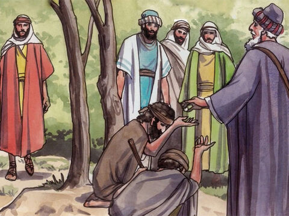
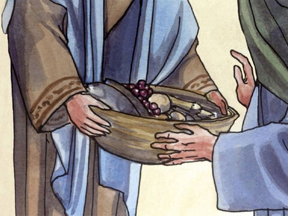

The Sermon On The Mount: Giving To The Needy
Take heed that ye do not your alms before men, to be seen of them: otherwise ye have no reward of your Father which is in heaven.
Therefore when thou doest thine alms, do not sound a trumpet before thee, as the hypocrites do in the synagogues and in the streets, that they may have glory of men. Verily I say unto you, They have their reward.
But when thou doest alms, let not thy left hand know what thy right hand doeth:
That thine alms may be in secret: and thy Father which seeth in secret himself shall reward thee openly.
Matthew 6:1-4
- 
- 